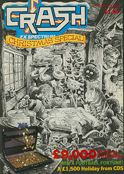
Lloyd Mangram LOOKS BACK At 1986
Taken From CRASH Issue No. 36, Christmas Special 1986/87
Another hectic year lies all but drawn to a close in CRASH terms, and the last pages of this Christmas Special are making their way from the typesetters 'up' to ART. I am left here putting the finishing touches to my annual review of the year, before I cycle across town to the Grovel Hill headquarters of LM to make my contribution to the January issue. It has been a very busy year, and I forsee even busier times ahead. I only wish my pay increased in direct proportion to my workload...
Without doubt the prevailing trend of 1986 was for coin-op conversions, with the field being led by ELITE (Capcom) and IMAGINE (Konami). As a result of the success of such conversions, Konami have now decided to go it alone, forego licence royalties and capitalise on the immense commercial possibilities of 'sourcing their own product' to slip into the jargon so beloved of the trade.
The trend towards budget games was difficult to avoid spotting during the year. A host of new labels were launched, most of them coming from established 'mainstream' publishers, and most of them turning out mediocre product - although there were a few bright spots on the budget front.
It has been an interesting year, ending with dark rumours that at least one of the giant corporations that have been acquiring smaller software houses (another '86 trend) is planning to leave the market in 1987. Whatever rumblings this move may cause if it takes place, the TV, film, book, personality and toy tie-ins look set to continue almost unabated. The views on licence deals expressed by the CANVAS team in our feature on DENTON DESIGNS later this issue are very interesting...
But on with the appraisal of 1966, a year which saw the departure of Clive Sinclair from the home computer market, and which produced some vintage software as well as some games that have already been cast into the murk of the CRASH Towers cellar, never to see the light of day again... some might even argue that they should never have seen the light of day in the first place....
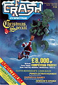
January
The Christmas Special for 1985/6, which is really the January issue, got the year off to a good start for MASTERTRONIC, who collected a Smash for Spellbound, scoring a very respectable 95% overall. This was a good beginning to the year for programmer David Jones and his cute character Magic Knight - and it wasn't to be his only Smash of the year...
The year also began auspiciously (LMLWD) for Walsall-based software house ELITE, who collected one Smash for a surprise game which they were sent from out of the blue: Roller Coaster, and another for the first of many coin-op conversions they were to produce during the following twelve months: Commando. In fact, ELITE had decided to go for a placing in the upper echelons of the software industry during 1986 - and during the year they released a lot of very strong products, concentrating mainly on coin-op conversions.
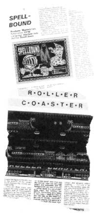
The end of 1985 saw MIKRO-GEN's brave attempt at improving the Spectrum's capabilities with the launch of the Mikro-Plus, an interface that included a ROM, and allowed programmers to write larger games for the basic 48K machine. Sadly, the first (and only) game to appear on the Mikro-Plus system, Shadow of the Unicorn wasn't anything terribly special. At £14.95 it was expensive: retailers, however, didn't get to make their standard percentage of the selling price - the hardware add-on cost over £4.00 to manufacture - and it wasn't a very attractive proposition to the trade. The whole concept, greeted with enthusiasm in some quarters and as the answer to piracy in others (a Mikro-Plus game could only run with the hardware, and each game needed its own special interface), fizzled out rapidly. MIKRO-GEN were left with an embarrassingly large quantity of redundant units, and entered 1986 licking their corporate wounds. Innovation doesn't always pay off....
After one of the longest delays in software publishing history (but not the longest!), PSS released Swords and Sorcery - the innovative dungeon-exploring game they had been working on for an embarrassingly long period of time. Derek Brewster was impressed, and the game duly collected a Smash. Later in the year, Role-Playing purists were to attack S&S in the Signpost, but there was no doubt that Mike Simpson had broken new ground and crammed his game with artificial intelligence routines. Still no news, at the end of the year, of the promised expansion modules for dungeon explorers though...
Liverpudlian software house ODIN followed up their excellent Nodes of Yesod with Robin of the Wood, a graphically stunning arcade adventure. They then began to put themselves on the software map as the producers of quality games - an epithet that their sister company, THOR never quite managed to achieve. Coincidentally, Robot Messiah from ALPHABATIM, a new company, was also reviewed in the Christmas Special. Early in the New Year, ODIN and ALPHABATIM were at legal loggerheads over graphic routines - a little dispute that was quickly settled.
Clive Townsend, a newcomer to the Spectrum programming scene groomed by DURELL, waded in with his first game Saboteur, and collected his first Smash. What a start to a programming career! INSIGHT also stepped into the CRASH Smash Hall of Fame with a neat shoot em up, Vectron, which was to emerge later in the year as a re-release from FIREBIRD. 1986 was to be a year of corporate acquisitions.
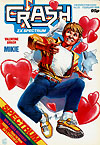
February
Christmas has become a landmark for the software industry. Obviously, people are in the mood for spending money during the festive season, and software houses have always rushed to get their best products on the shelves in time for the shopping boom. Last year a lot of games missed the 'peak' selling period and to quite a few people's surprise, still sold remarkably well. Again in 1986, games continued selling well throughout the year - we heard reports that even the slump in demand during the summer was hardly noticeable.
The February Issue wasn't short of Smashes. After living on tenterhooks for months (ever since Jeremy 'I want a Zoid' Spencer first talked to MARTECH and the ELECTRONIC PENCIL COMPANY), we were finally treated to the finished Zoids in CRASH Towers. To a being, we were impressed, awarding the game 96% overall. I have spotted one or two voices of dissent in my mailbag since then, but looking back I still maintain that the game was a major achievement. One of the better toy tie-ins, that shines like a beacon above Transformers, for instance...
The new IMAGINE, run and owned by OCEAN - who purchased the name from amongst the ashes of the original debacle (LMLWD), also kicked into February with some powerful products. Two coin-op conversions from the Konami arcade achieved Smash status: Yie Ar Kung Fu and Mikie. IMAGINE managed to keep up this pressure throughout the year...
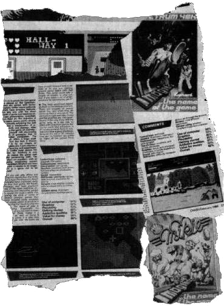
An unbroken track record was maintained by ULTIMATE with Gunfright, which used the same techniques as Nightshade, but included a great deal more in the way of gameplay. Sweevo's World finally caught up with our deadlines, and was finished in time for a proper review in February - having been treated to no less than two previews in the months before as it neared completion. The game was a gentle departure for GARGOYLE - it was more of an arcade adventure than previous releases, so much so that Greg Follis described it as 'a piece of whimsy'. More radical departures from the puzzle-intensive style of programming were due from the Dudley trio later in the year...
A frustratingly simple game arrived from Spanish software house DINAMIC, courtesy of GREMLIN, who also 'imported' Rocco, one of three boxing simulations that vied with each other in the Spectrum ring for supremacy. West Bank took the reaction-test type of game to its logical limit - all you have to do is press one of three keys to fire through one of three doors presented on the screen. Shoot the right person or object and points are won, shoot the wrong person or a bomb and lives are lost. Almost minimalist in its simplicity, the game proved mightily addictive. As a budget game it would almost certainly have been a Smash, but at £7.95 it earned a respectable 84%.
Regarded by some as the best of the boxing simulations, ACTIVISON's boxing game was endorsed by Barry McGuigan. Although it arrived months after Rocco and Frank Bruno entered the ring, the extra training appeared to give it the edge. On the adventure front, ACTIVISION did particularly well with Mindshadow, which Derek recommended heartily to anyone with the vaguest interest in adventuring.
Budget masters MASTERTRONIC provided a rapid illustration of the way in which 'cheapies' can vary in quality. They followed up on their Christmas Smash with an appalling little game called 1985 (this would have been more aptly titled 1982), and the more respectable Soul of a Robot. It just goes to show that reading reviews is highly important when contemplating the purchase of budget titles.
Two companies that were to fade away quietly during 1985 appeared in FRONTLINE: CENTRAL SOLUTIONS who specialised in 'Budget' budget games (most of their catalogue had a retail price of 99p), weighed in with a mediocre strategy game called Just Imagine, while REELAX GAMES revealed their approach to commerce with The Trading Game. Neither impressed our tame strategist, Sean Masterson.
FIREBIRD, who had been quiet for a while, popped out with a re-tuned, machine-coded version of Runestone, which they had snapped up when THE GAMES WORKSHOP decided that publishing software wasn't a game they wanted to play.
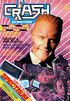
March
The Ides of March proved favourable for MIKRO-GEN - they staged a dramatic recovery from the Mikro-Plus setback by pumping three games onto the market and collecting Smashes for two of them. Sir Fred was 'imported' from Spain, and the endearing cartoon graphics combined with tricky gameplay had the hero knight trying to rescue his damsel in the middle of a game which became a Smash. Three Weeks In Paradise, which proved to be positively the last of the Wally Week games (so it seems, at least) also collected a Smash. Another MIKRO-GEN game, an in-house shoot em up vaguely tied in to the TV series behind its title, Battle of the Planets, fared slightly less well at the hands of our reviewing team.
The talented team at DENTON DESIGNS also paraded two games in front of the CRASH joysticks - the follow-up to Shadowfire, called Enigma Force and an original, multi-facetted romp featuring sludge monsters and slime beasts entitled Cosmic War Toad. Both games missed Smash status quite narrowly.
In fact, Liverpudlian companies featured very prominently in March - OCEAN turned in Rambo and NOMAD, achieving parallel ratings of 79%, while IMAGINE released the work of a Hungarian programmer in the form of MOVIE, gaining not an Oscar but a Smash.
In fact, releasing games in pairs seemed all the rage. DESIGN DESIGNer Simon Brattel completed work on Forbidden Planet, which was in effect a follow up to Dark Star, and Graham Stafford sent us a production copy of 2112AD, the game which starred canine hero Poddy.
Two Commodore specialists also released Spectrum games. Yabba Dabba Doo appeared on QUICKSILVA's label and was written by the TASKSET programmers, and WIZARD DEVELOPMENTS, the company set up by Commodore star Tony Crowther, gave Spectrum owners the benefit of a conversion of William Wobbler. They didn't regard it as much of a benefit, it seems...
March was positively a month of '2's. Two adventure games were Smashed: Lord of the Rings and Worm in Paradise, the third part of LEVEL 9's Silicon Dream trilogy. Two games came from the US GOLD stable, one good one poor - Winter Games and Zorro respectively. And the World War Two strategy/wargame that put you in control of Britain's airbourne defences during the Battle Of Britain, Their Finest Hour was looked at twice, by both Derek and Sean, collecting a Smash from FRONTLINE. MIRRORSOFT completed the Spitfire picture for avid fans with the release of their flight simulation, Spitfire 40, which zoomed up to the heady heights of a CRASH Smash.
Mel Croucher, the man behind Deus Ex Machina and Pimania amongst other things, came back from a short self-imposed exile researching into new hardware and the software possibilities it opens up, to produce ID for CRL - an unusual, text-based entertainment in which the player had to coax and cajole a frightened personality hiding in the Spectrum into revealing details of its past.
A few weak games arrived, including some budget titles and a very tedious football quiz, but all things considered, March was a very good month for Spectrum software...
Not a bad month for the Spectrum itself, come to that. We took a look at the new 128K machine Sir Clive launched on the public, and the speculation as to whether it would be a success began. Now that Christmas is here, if the contents of my postbag reflect the real world of speculation about the viability of Amstrad's relaunched 128, the Spectrum Plus Two.
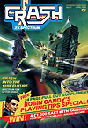
April
Whatever 'Old Wives' say about showers during this month - it doesn't hold true for games, although it rained games at CRASH Towers there was only one Smash in the shower. ELITE turned in a straightforward implementation of Bombjack, which was devoid of frills but deliciously playable. Not a case of pushing the Spectrum to its limits, but a very entertaining and faithfully executed conversion.
A trio of games from FIREBIRD's so-called 'hot' range turned out to be not-so-hot. Worst amongst the bunch was Gerry The Germ, a game full of wit - well alright then, well-worn puerile humour - which lacked in the playability department and attracted a very lukewarm 45%. The duo behind Costa Caper, Messrs Marsden and Cooke (remember Technician Ted?) got a bit warmer and collected 64%. 'Hotrangewise' as Herbie Hyperbole Wright of FIREBIRD might so easily have said, the lead game was Rasputin, a jolly 3D romp against the forces of evil.
Star newcomer to the software world during April was Richard Welsh, whose homegrown program Frank The Flea warmed everyone's heart, and earned a very respectable 67% for the novice programmer. We haven't heard from Richard recently, but his last stated intention was to buy a compiler and start writing games that run in machine code.
Julian Rignall, one of the 'Spiky Haired Ones' from ZZAP! who terrorise the Competition Minion, filled a guest slot by looking at the new games releasead for the 128K Spectrum and found himself gently impressed by the capabilities of the new machine. Praise indeed, from a dedicated Commodore arcadester.
As things turned, the final review for the rather strange surfing game, Surfchamp created by Irish software house NEW CONCEPTS, was not as disparaging as most people in the Towers expected it to be. Perhaps the psychological effect of using a rather silly-looking plastic surfboard didn't have as detrimental an effect as we first supposed... The NEW CONCEPTS advertisement hit an all-time low in terms of artwork standards, while their promotional Sweat Shirts hit an all time high in the office. Isn't life strange?
The new BUG BYTE, now owned in name by ARGUS PRESS SOFTWARE, chipped in with a couple of budget games, the best of which was the rather tweely named Sodov The Sorceror in which you were involved in asking marauding dragons to go away. Well, Go Away The Sorceror wouldn't have had much of a ring to it according to BUG BYTE supremo, Peter Holme... Roboto contributed little to the world of budget games, but Realm of Impossibility contributed nothing positive to the games-playing world or ARIOLASOFT's credibility. At £1.99 it would have been a very weak title, better suited to release back in the pre-Issue 1 days, but at £7.95 in 1986 it was lucky to collect 10% overall. For the same money, ARIOLASOFT were offering Think!, a very compelling icon-driven puzzle game designed by TIGRESS, or for a pound more you could buy Skyfox from the same company - a very competent flight simulator. Perhaps Realm of Impossibility was ARIOLASOFT's April Fool joke...
Other disappointments for April (apart from Robin Candy's face an the cover and all over his Playing Tips supplement) included a new release from ELECTRIC DREAMS who had got off to a reasonable start with I, of the Mask and Riddler's Den. Winter Sports was less than state of the art, and arriving as it did almost in parallel with US GOLD/EPYX's Winter Games, a newly formed reputation was dented. Blade Runner, from CRL was another disappointment - this time for film fans. No doubt the licence was an expensive one, but the product it inspired wasn't... well, wasn't inspired.
Overall, April was an interesting month, which saw a wide range of software released including a football league strategy simulation, a couple of puzzle games, a show jumping simulation (from ALLIGATA - who resisted the temptation to get their product endorsed and ended up doing a reasonable job on an offbeat subject), a surfing simulation and a collection of more usual, run-of-the mill releases. Most embarrassing game of the month had to be Transformers, released by OCEAN and programmed by DENTON DESIGNS. Not their best work by a long chalk.
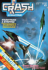
May
'Never cast a clout 'til May's out' my grandmother used to remind us all. Now we've entered the Binary Age, maybe software houses should update the saying and make sure that they never master 'til the bugs are out. May's games were bug-free, and although rather fewer in number than other months, they tended to be rather higher in quality.
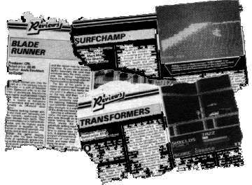
Lead Smash of the month was the eagerly awaited Starstrike II from the Masters of 3D (joint holders with Simon Brattel), REALTIME. According to Plan A, Starstrike II was due for release before Christmas, and the trio at REALTIME invested a significant sum advertising the fact. Sadly, as is so often the case, deadlines slipped and the game was ready for release (without bugs) several months later than scheduled.
Nevertheless, it went down well in the Towers, earning gasps of admiration from every reviewer who saw it on the CRASH office Spectrums, it was clearly worth the wait. As I sit In my cramped office penning (well Hermes-ing) these words, all the reviewers in the CRASH office are currently gasping in admiration in front of another REALTIME game, this time Starglider, released by RAINBIRD. They haven't lost their touch...
ULTIMATE released their penultimate game for 1986 - Cyberun, which duly scraped a Smash and joined another Konami conversion from IMAGINE, Ping Pong at the 90% mark. Matchday programmer Jon Ritman launched his slick 3D version of Batman on the world via OCEAN, impressing Batman fans everywhere with the gloss and attention to detail invested In the program. And GREMLIN's combat game, Way of the Tiger collected a creditable 93% which pleased the firm's boss, Ian Stewart, and meant that the tie-in with Knight Books and the Way of the Tiger series of interactive ninja fiction had paid off. Three companies had very near misses on the Smash front: DURELL still haven't completely forgiven us for spoiling their unblemished run of Smashes by awarding Turbo Esprit 88% overall: Mike Daniels of GLOBAL winced audibly when he phoned in to discover that Attack of the Killer Tomatoes, the first of his 'Golden Turkey' film tie-ins, had just been pipped at 89% while IMAGINE remained inscrutable about the 88% awarded to their conversion of Konami's Green Beret.
Rather unusually, a game from ATLANTIS got a double rating! Opinion was so firmly divided in the office as to the merits of Supercom, a hacking game, that it received 86% overall AND 21% overall. Nothing like breaking with tradition...
Another Combat game, this time a simulation of the pointy-stick school of Karate, was launched on the world by MIRRORSOFT but failed to add anything significant to the genre. Exploding Fist seems to be the classic in this field, even today. Another fighting game, this time of the bombs and bullets variety, came from ALLIGATA, who dared to upset ELITE, holders of the official Commando licence, with Who Dares Wins II which finally appeared on the Spectrum screen after some legal wrangling. With licences being expensive commodities, the precedent for defending game scenarios and concepts was set - a major departure from the early days, when I can remember a host of 'clones' appearing around every 'original' idea...
ELECTRIC DREAMS set off on the path to film tie-ins with a disappointing rendition of Back to the Future, while on the licence front Max Headroom broke the barrier to arrive on the Spectrum. Deliciously different, MARTECH decided to licence a front - Samantha Fox's - which appeared in pixellated form in Sam Fox's Strip Poker. Some commentators suggested that ARIOLASOFT should have been awarded that particular licence...
The flrst of the Lucasfilm games appeared from ACTIVISION in the shape of Ballblazer - another delayed release - but this time one which was greeted with a measure of apathy, and ATLANTIS did their best to squeeze the last dribbles of humour out of the C5 in Revenge of the C5.
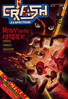
June
Halfway through the year, and the June issue was very thin on the ground as regards licence deals and tie-ins. OCEAN's game about the lizard-aliens that starred in the series V, The Young Ones from ORPHEUS and the belatedly-reviewed Friday 13th from gore masters DOMARK were the only games that featured characters who had appeared on screens that weren't attached to a computer. There was nothing special about any of the three, and in fact The Young Ones was a fair old disappointment.
An octet of Smashes appeared, including the first ever Smash for a 128K game - Knight Tyme written for MASTERTRONIC by David Jones (and later to appear in a 48K version). Phil Churchyard, a regular contributor to Playing Tips POKEwise, collaborated with Paul Shirley to produce Spindizzy which collected a Smash for ELECTRIC DREAMS, and made up for a couple of mediocre releases from the Southampton-based company started by Rod Cousens.
Two adventuresome games collected Smashes, Heavy on the Magick from Derek and Redhawk from the reviewing team. It looks as if GARGOYLE are going to be giving their adventure/puzzle games a bit of a rest for a while as they concentrate on their arcade label, but MELBOURNE HOUSE released the follow-up to Redhawk, Kwah just in time for a review in this issue. And second time around, Derek Brewster gets to evaluate the caped (or should that be feathered?) crusader's deeds of derring-do.
Mr Masterson took the unusual step of re-Smashing Desert Rats from CCS when it arrived in 128K form - claiming that he'd forgotten first time around on the 48K version! And the issue concluded with three more Smashes - ULTIMATE's last game of 1986, Pentagram, GREMLIN's vertically-scrolling platform variant with yet another ball as hero, Bounder, and Quazatron from Steve Turner on the HEWSONS label.
As months go, June was quite high quality - only five games received less than 60% overall, which indicated that a summer slump in games of quality was going to be avoided this year: as indeed it was.
Large and complicated arcade adventures were flavour of the month during June: A'n'F waded in with Core, PROBE went all robotic with Mantronix, and Glass programmer Paul Hargreaves completed the monster game Tantalus for QUICKSILVA.
A pair of sequels came under our reviewers' metaphorical microscopes - they liked Alien Highway from VORTEX, the follow-up to Highway Encounter, but disliked Mugsy's Revenge from MELBOURNE, which was only saved from a trashing by the fact that a free copy of Mugsy was included on the tape.
Despite the awful artwork in the advertisement, Legend of the Amazon Women proved to be a passable beat em up from US GOLD, while the budget arm of the same enterprise offered the pseudo-mystical Secret of Levitation, which failed to rise above the half-way mark in percentage terms.
The Telecom team at FIREBIRD went hedgehog crazy with Spiky Harold, but failed to take advantage of the licensing opportunity on the doorstep of CRASH Towers - the British Hedgehog Preservation Society has is headquarters a few miles away from my home and I regularly encounter its leading light, one Major Adian Coles, as he constructs little ramps for the spiky creatures to use to clamber out of cattle grids ... FIREBIRD's other June offering, rather late for the event it parodied, was The Comet Game, a space romp loosely based on the arrival of Halley's comet - which had turned tail and travelled deep into space when the game was released.
Time and celestial bodies wait for no man, and nor do American Footballers. All the razamatazz surrounding the Superbowl had faded in the memory of Channel 4 viewers by the time OCEAN got to the shops with Superbowl.
Unexpected arrival of the month award went to ADDICTIVE who came to CRASH Towers without Kevin Toms, without Football Manager and with Kirel, a cute jumping game that won the heart of our Girlie Tipster, Hannah Smith...
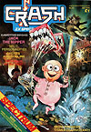
July
The summer season began with a quartet of Smashes - and four very different games they were. Over in adventureland, Derek was knocked out by LEVEL 9's Price of Magik - a follow on to Red Moon - which sends the player on a quest to learn about the mystical arts. Derek insists that each of LEVEL 9's successive releases contain that bit more magic, in terms of what they can do with the Spectrum. Another classic coin-op conversion left the ELITE stable in the form of Ghosts 'n' Goblins, and marketeers extraordinaire DOMARK, finally collected their first ever Smash for Spitting, sorry, Splitting Images. A very simple, and indeed ancient concept - the sliding block puzzle - gained a new lease of life.
Could GREMLIN get the hat-trick? In May they had a Smash. In June another. July came, and with it the terrible antics of a wicked character who could so easily have been the creation of an artist working for THE BEANO. Jack The Nipper put an interesting slant on the arcade adventure format, amused everyone and did indeed collect a Smash.
Three games that everyone had great expectations for also arrived this month, and each of them proved a disappointment. Biggles from MIRRORSOFT certainly hadn't been flying an undercover mission - the game was tied in with the film of the same name, and the level of promotion and publicity which it received meant that few people could have missed its impending arrival. When the game came in to land, however, it proved to be quite unremarkable. After a good six months' delay, MELBOURNE HOUSE released Rock'n'Wrestle, which had lost the 'rock' on the way to the ring and, without the endorsement of Big Daddy, had very little to offer. July was also the month that we looked at the game which fell shortest of expectations; the most contentious game of 1986. World Cup Carnival. A major licence deal, a large box crammed with 'goodies', a cassette - a cassette containing a marginally revamped football game that originally appeared on the ARTIC label and was now very long in the tooth.
A handful of budget games arrived, most of them mediocre but Snodgits from SPARKLERS - a sort of detective game - took an unusual approach and proved very playable. FIREBIRD entered the budget arena with a combat-decathlon variant Ninja Master, and the adventure scene with Seabase Delta which somehow captured the imagination of Derek's readers, and was to appear in his letters page on a regular basis over the next few months.
FRONTLINE looked at a pair of games from PSS, one good, one not so good. Theatre Europe, a game with a rather sensationalist subject, was the better of the pair and seemed likely to encourage players to think about the implications of nuclear war, involving them as it did in making decisions about the launch of nuclear missiles. 'Everyone makes mistakes; this is PSS's' wrote Sean Masterson about Iwo Jima. You can't win 'em all!
Molecule Man from MASTERTRONIC and Equinox from MIKRO-GEN offered quality fare for fans of the arcade adventure, while MARTECH's cunning space game, which was tied-in with an astronomer, threw new light on the arrangement of our universe. The Planets managed to combine elements of arcade, adventure and educational games and presented a complicated and slightly daunting challenge to the player who set out on a mission to - yes, at least that part was 'standard' - to save the Earth from destruction.
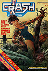
August
The summer of this year was nothing spectacular - maybe people kept releasing games because there was nothing more pleasant to do? Whatever the reason, we were flooded with budget titles this month - unfortunately they were mostly uninspiring.
Games involving balls were popular in 1986. Apart from kicking them and hitting them in sports simulations, they also had to be bounced, rolled and jumped through hostile terrain. Bobby Bearing from THE EDGE rolled cut into the Metaplanes this month in search of his cousins and found a Smash on the way, and an anonymous football negotiated fire, nasty sharp pins and boxing gloves amongst a host of other nasties in MIRRORSOFT's flip screen arcade adventure Action Reflex.
Pumpkin fans got their chance to strike back in Cauldron II, PALACE's sequel in which a cute bouncy pumpkin (nearly a ball, but not quite) had to make his way round a flip screen castle in the best arcade adventure tradition, collecting the wherewithal to depose the evil Hag. Another Smash.
FIREBIRD (perhaps spotting Sean Masterson's favourable comments about an old RED SHIFT game, Rebel Star Raiders some months ago), launched a revamped version on their budget label and collected a Smash for their trouble. Spotting a gap in the market and then filling it, is without doubt, the route to commercial success!
Two quality arcade adventures also collected Smashes: Pyracurse from HEWSONS in which a large South American temple/tomb had to be explored 'Raiders of the Lost Ark' style, and Heartland from ODIN who by now had handed over the headaches of publishing games to FIREBIRD and were concentrating on writing them.
The first games arrived from the new budget label launched at chateau INTERCEPTOR - PLAYERS - they were met with an almost unanimous lukewarm reception, despite the Hip-Hop packaging. Our very own Derek Brewster also met with a poor review for his new game, Con-quest which appeared on MASTERTRONIC's MAD label.
A couple of clones poked their noses above the ramparts - ALLIGATA's BUDGIE label turned in a fair rendition of the Wizard's Lair theme with Labyrinthion, earning 60% overall, while ARIOLASOFT published another game from Dave Harper, Toadrunner, which bore a very striking resemblance to his earlier work for ELECTRIC DREAMS - Riddler's Den. ELECTRIC DREAMS themselves gave film tie-ins a rest to release Hijack, which puts the player in the role of a harassed American official dealing with a terrorist incident.
Even though they collaborated with OCEAN, US GOLD didn't manage to do a particularly good job on their conversion of the ageing coin-op Kung Fu Master, and their second budget release on the AMERICANA label, Subterranean Nightmare turned out to be a bit of a bad dream.
The rush to budget software didn't appear to be producing anything special, with mediocre products from MASTERTRONIC, CENTRAL SOLUTIONS and ATLANTIS filling the remaining review pages....
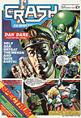
September
Things quietened down over September, but at last Oli was able to do the cover he'd been waiting to get to grips with, ever since he heard that Dan Dare was on its way from VIRGIN. Despite repeated requests, the team at VIRGIN simply hadn't allowed a single early screen shot out of their programming chamber, and when the game arrived it was a complete mystery .... Moments after it had loaded it became clear that the game did justice to the cartoon hero and a Smash was on the cards. VIRGIN's other game, Atlantic Challenger (which gives the player a chance to control Virgin supremo, ocean racer and litter campaigner Richard Branson) did less well. Maybe there should have been an arcade sequence in the park with one of those pointed sticks... This was a good year for MIKRO-GEN, but perhaps a slightly bad month - their new game which introduced 'Teenage Superhero' Ricky Steele missed Smash status by a single percentage point to the disappointment of all down in Bracknell, where Wally Week is in comfortable retirement.
Rod Bowkett's keenly-awaited follow up to Dynamite Dan was completed in time for review and lived up to expectations - another fairly straightforward platform game, but one with so many added touches that a Smash was inevitable. And two Smashes were awarded in the adventure world - one for The Boggit, a delightful spoof on Tolkien created by DELTA 4 and published by CRL, and another Smash for INCENTIVE's adventure-writing utility, The Graphic Adventure Creator which went on to take the homegrown adventure world by storm.
Flight simulator fans were treated to ACE by CASCADE, a company whose reputation was founded in the budget compilation market, and which moved towards mainstream games publishing with a very neat airborne combat simulation.
Saving film tie-ins for later in the year, ELECTRIC DREAMS went aquatic, producing a whimsical undersea romp by the name of Mermaid Madness, and an aqueous version of Panzadrome written by RAM JAM and called Xarq.
Rupert Bear and Dangermouse starred in games from BUG BYTE and SPARKLERS respectively, but failed to achieve superstar status, while Santa Claus made an unseasonally early appearance in a game from ALPHA OMEGA, the budget label created by CRL. No-one was likely to leave out a glass of sherry and a couple of mince pies for this Father Christmas....
After the problems they experienced with The Young Ones, ORPHEUS decided to stop publishing games in their own right, and instead concentrate on providing a programming and conversion service for other companies. Tujad had been completed before The decision was taken, and duly appeared on the ARIOLASOFT label, winning some admiration for the graphics, but breaking no new ground as an arcade adventure. French software house INFOGRAMES did try to break new ground on the adventure/role playing front, but somehow lost direction along the way with Mandragore.
As the September issue was being written, companies were gearing up for the Personal Computer World Show and seemed to be saving the best for their stands... with a massive preview section completed, the rest of the CRASH team departed for Olympia leaving yours truly to hold the fort.
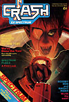
October
The Personal Computer World Show, as always, was an event and a half where all the leading lights of the software industry paraded their promises for Christmas. C&VG carefully avoided parading Melissa Ravenflame. Despite a hard-fought sticker war, the cartoon tipster failed to materialise leaving the Show floor to our own Girlie Tipster Hannah Smith.
Trivial Pursuit arrived on the DOMARK stand at the show, and collected another Smash for the marketeers in the October Issue - after a period in the doldrums (as far as ratings go anyway, DOMARK seemed set to make their mark. ELITE continued their coin-op conversions, launching Paperboy and 1942 - Paperboy came remarkably close to being a hit in the ratings, while the general consensus of opinion surrounding 1942 was that it was an accurate conversion of a rather dull game. But ELITE wasn't left out - Scooby Doo, a different version to the one originally planned in late '85 - collected a Smash. Domination of the HOTLINE Charts seemed to be ELITE's aim ...
After a fairly long absence from the scene, VORTEX bounced back with a ball game from Costa Panayi - an elegant 3D puzzle cum arcade-adventure entitled Revolution which completed the trio of Smashes for the month.
Another bevy of budget games scurried in for review and were all poor to awful except for Lap of the Gods from MASTERTRONIC, which followed on from One Man and His Droid and collected 80%.
Tennis from IMAGINE got a poor reception - the best of the Konami coin-ops had already been converted, but the reception that Knight Rider received was even less favourable. Despite the interminably long wait (and the release of an early, completely different game through a mail order catalogue) OCEAN had very little to offer.
The seeds of controversy were sown in two reviews - Head Coach (see the Christmas FORUM) and Zythum. MIRRORSOFT weren't terribly impressed with our review and felt that we hadn't done the game justice... The favourable review Strike Force Harrier attracted did little to mollify the affront.
Newcomers PIRANHA got their teeth into the software market, kicking off with Trapdoor and Strike Force Cobra and narrowly missing a Smash with Don Priestley's colourful interpretation of the TV series starring Berk and a host of strange creatures confined below the trapdoor.
The Spectrum Plus Two moved closer to being reality - sample machines had been on display at the PCW Show, but didn't get into the shops until much later....
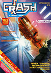
November
Once again, lots of budget games came under scrutiny, and despite entries from MASTERTRONIC and AMERICANA, FIREBIRD lead the field in terms of quality with Bombscare, Happiest Days of Your Life (a Wally Week clone - maybe the hero's in retirement but the format still lives), Olli and Lissa and Thrust. The Telecom team were let down a little by Kai Temple, but no-one's perfect, especially in the budget world...
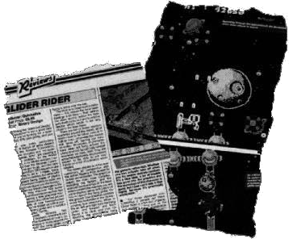
Smaller companies led the Smash field this month - DURELL provided a very unusual 3D game with an equally unusual title, Fat Worm Blows A Sparky, GARGOYLE treated everyone to an attribute-clash-free shoot em up, and CCS impressed our tame strategist with Napoleon At War. INFOGRAMES, though by no means a small company, came very close to a Smash with L'Affaire Vera Cruz, as did GREMLIN with Trailblazer and ARIOLASOFT with the original concept of Deactivators.
Street Hawk finally got into the High Street and proved to be a disappointment, but not as great a disappointment as Knight Rider. Asterix was another long awaited game that proved less than wonderful, despite the protracted development time, and MELBOURNE HOUSE did nothing to improve their gently slipping image by releasing Conquestador, a cute but unremarkable arcade adventure.
Controversy began to rear its head again, when we awarded Glider Rider a Smash for the 128K machine, but didn't make a song and dance about it because the 48K game only merited 80%.
Another bumper 164 page issue was planned for December, to cram in all the game reviews that we expected to have to cope with...
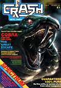
December
With Christmas fast approaching, software houses began revealing their prime programs. Out of some thirty games which we looked at last month, only five scored less than 60% overall. ALPHA OMEGA somehow don't seem to have penetrated the budget market with quite the right approach - their games have consistently failed to achieve good ratings. More Omega than Alpha, in fact, with Dr What collecting a mere 17%.
CODEMASTERS entered the budget arena with a pile of titles, which received a warm reception.
Otherwise no major surprises as promised Christmas games arrived for review... Another twelve months of CRASH HISTORY was ruled off in the ledger, and the New Year awaited eagerly.